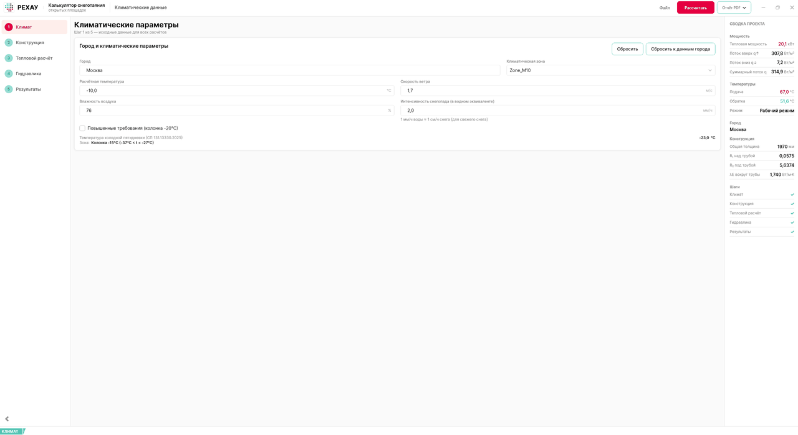
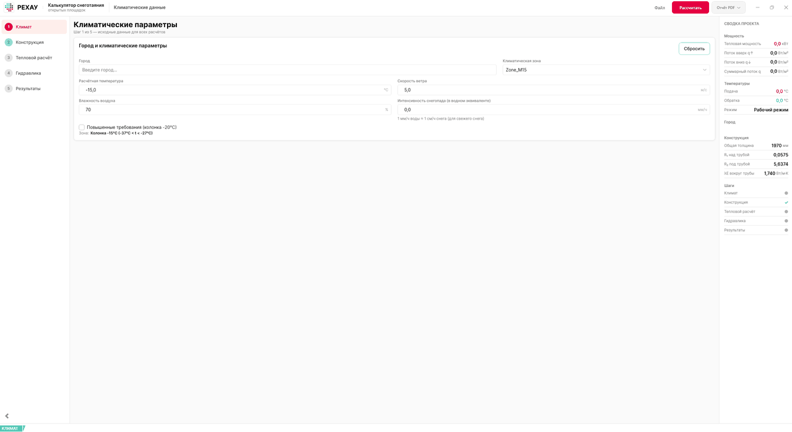
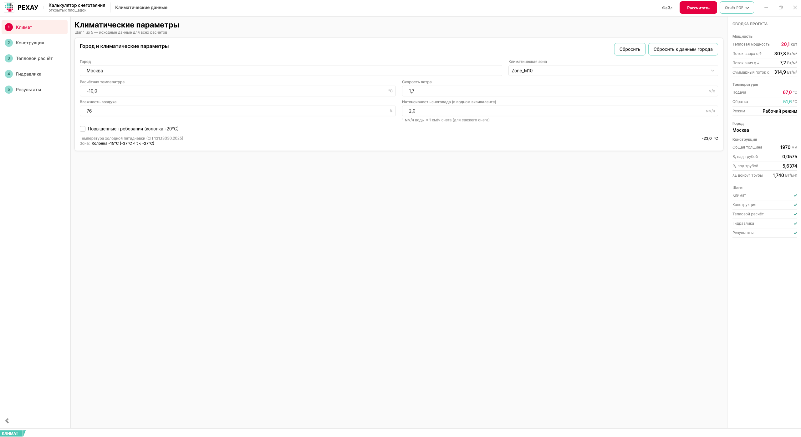
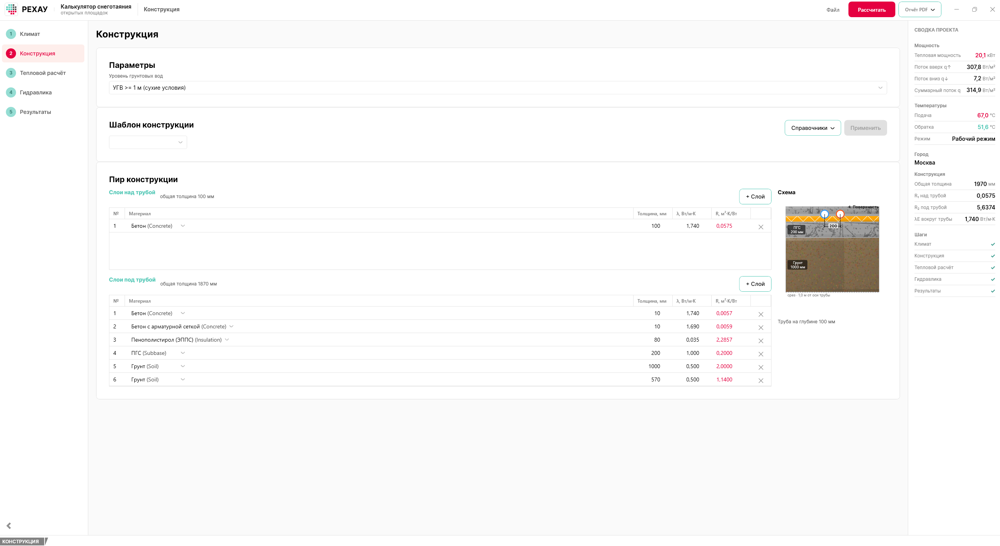
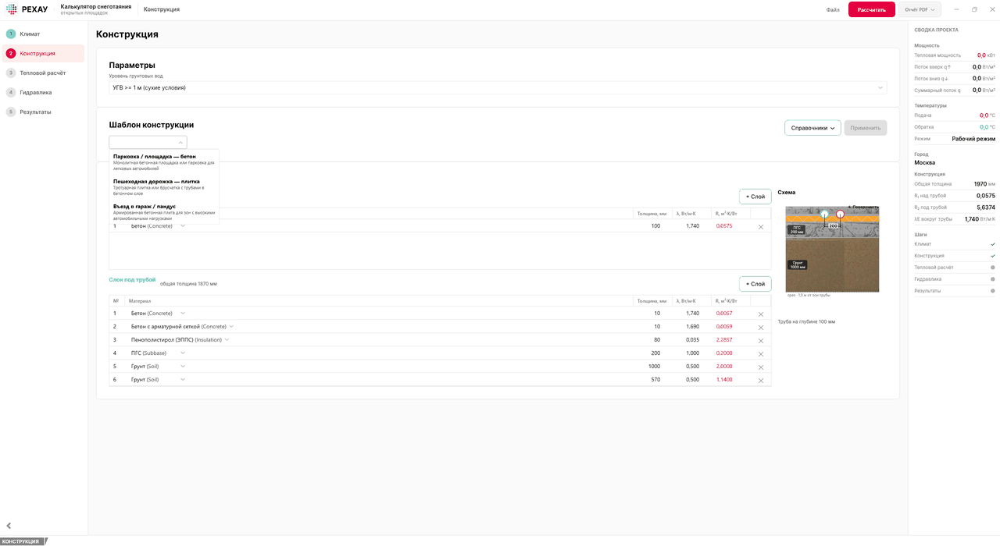
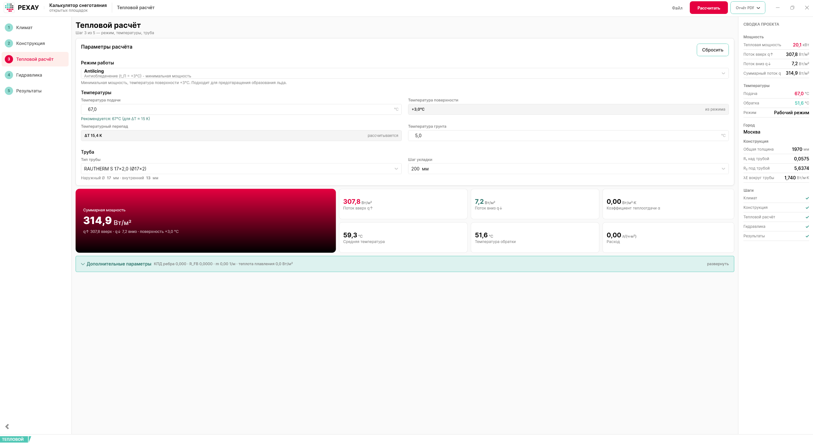
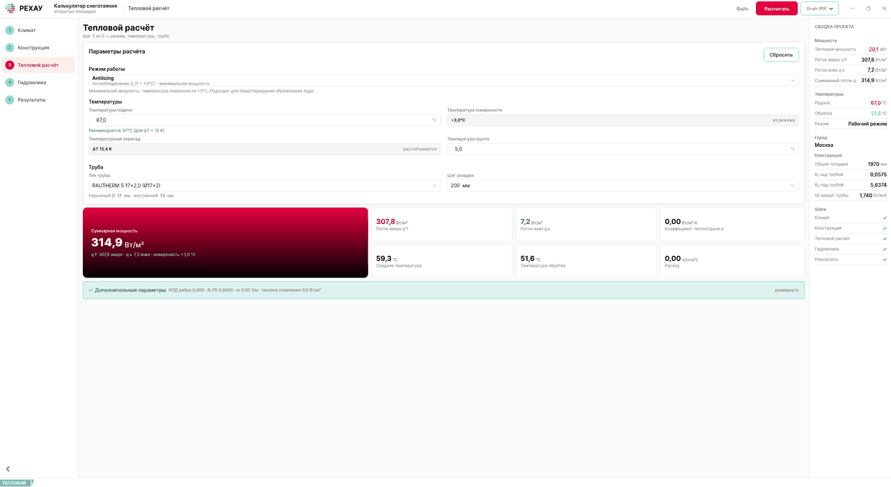
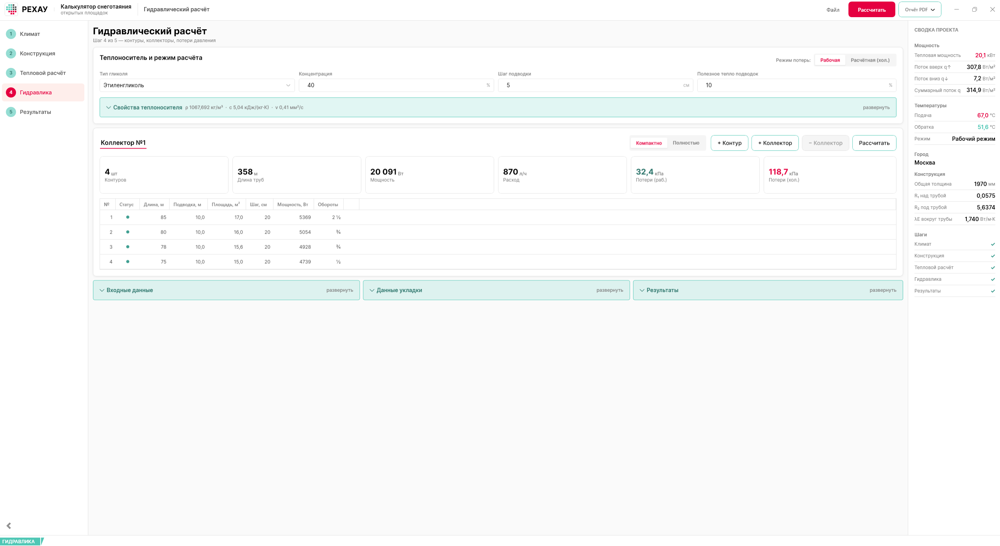
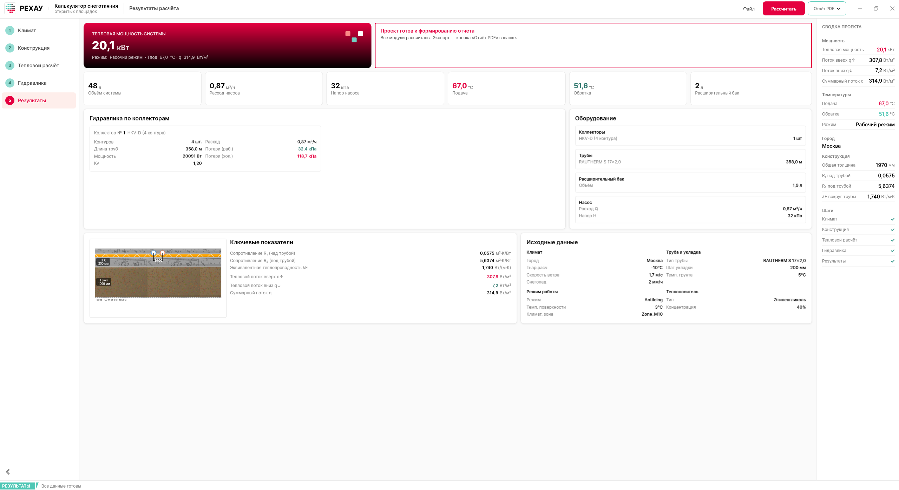

Калькулятор снеготаяния РЕХАУ
Полная инструкция: от установки до готового отчёта. Все цифры в примерах — из реального расчёта, вы можете повторить их 1:1.
Программа рассчитывает систему антиобледенения и снеготаяния открытых площадок: тепловую мощность по климату и конструкции пирога, гидравлику контуров и коллекторов, подбор насоса и расширительного бака — и формирует отчёт в PDF.

▶ Быстрый старт — 10 минут Устройство окна Материалы Конструктор пирога Если что-то не так
2Быстрый старт: от нуля до PDF за 10 минут
Демо-проект для повторения
| Параметр | Значение |
|---|---|
| Город | Москва (климат заполняется автоматически) |
| Конструкция | шаблон «Парковка / площадка — бетон», УГВ ≥ 1 м |
| Тепловой расчёт | режим «Антиобледенение», труба RAUTHERM S 17×2,0, шаг 200 мм, подача 67 °C |
| Гидравлика | этиленгликоль 40 %, 4 контура 85/80/78/75 м |
| Результат демо | мощность 20,1 кВт, насос 0,87 м³/ч · 32 кПа, коллектор HKV-D |
Цифры — иллюстрация на эталонных данных; ваши результаты будут отличаться. Все значения ниже — из реального прогона программы.
Шаг 1 · Климат (~1 мин)
- В поле «Город» начните вводить «Москва» и выберите подсказку «Москва · t = −23 °C · Московская область».
- Программа заполнит: расчётную температуру −10,0 °C, ветер 1,7 м/с, влажность 76 %, зону Zone_M10.
- Укажите интенсивность снегопада — 2 мм/ч в водном эквиваленте (1 мм/ч воды ≈ 1 см/ч снега).


Шаг 2 · Конструкция (~2 мин)
- Задайте уровень грунтовых вод: «УГВ >= 1 м (сухие условия)».
- В блоке «Шаблон конструкции» выберите «Парковка / площадка — бетон» и нажмите «Применить» — пирог заполнится целиком.
- Проверьте схему разреза справа: над трубой бетон 100 мм, под трубой ЭППС 80 мм и грунт.


Шаг 3 · Тепловой расчёт (~3 мин)
- Выберите режим работы — «Антиобледенение (поверхность +3 °C)».
- Выберите трубу RAUTHERM S 17×2,0 и шаг укладки 200 мм; температура грунта — 5 °C.
- Введите температуру подачи 67 °C — программа сама подсказывает: «Рекомендуется: 67 °C (для ΔT ≈ 15 К)».
- Нажмите «Рассчитать» в шапке.


Шаг 4 · Гидравлика (~3 мин)
- Выберите тип гликоля (этиленгликоль) и концентрацию 40 % — свойства теплоносителя пересчитаются автоматически (ρ 1067,7 кг/м³ · c 5,04 · ν 0,41).
- Заполните контуры: 4 шт по 85 / 80 / 78 / 75 м (подводка 10 м, площадь считается сама).
- Нажмите «Рассчитать» на карточке коллектора.

Шаг 5 · Результаты и отчёт (~1 мин)
- Проверьте сводку: 20,1 кВт, насос 0,87 м³/ч · 32 кПа, бак 1,9 л, коллектор HKV-D.
- Сохраните проект: Ctrl+S (номер и наименование — в шапке).
- Нажмите «Отчёт PDF ▾» → «Сохранить PDF…».

3Устройство главного окна
Наведите или коснитесь номеров на схеме — каждая зона описана под скриншотом.
- 1 · Степпер слева — пять шагов: номер в кружке (заливка кружка кодирует состояние шага) и название; глиф справа появляется только при проблеме: ⚠ ошибка валидации или ⟳ пересчёт. Полные статусы всех шагов (✓ готов · ● черновик · ⚠ ошибка · ⟳ пересчёт) — в своде «Шаги» на панели «Сводка проекта» справа. Степпер сворачивается кнопкой-стрелкой внизу слева или Ctrl+B.
- 2 · Шапка — название модуля, меню «Файл» (сохранить/открыть/создать, «О программе») и имя открытого файла. Звёздочка
*перед названием = есть несохранённые изменения. - 3 · «Рассчитать» и «Отчёт PDF ▾» — запуск теплового расчёта и каскада гидравлики; экспорт отчётов (предпросмотр, печать, PDF, пояснительная записка).
- 4 · «Сводка проекта» — панель справа с ключевыми цифрами и галочками готовности шагов. Видна при ширине окна от ~1680 px; если панель не видна — разверните окно.
- 5 · Статус-бар — цветная плашка активного модуля, текст валидации и индикатор «⟳ требуется пересчёт». Полная легенда — в разделе «Индикаторы».
4Шаг 1 — Климат
| Поле | Диапазон | Как заполнять |
|---|---|---|
| Город | справочник | Начните вводить название и выберите подсказку. Автозаполнятся температура, ветер, влажность и климатическая зона |
| Расчётная температура | −50…+10 °C | Заполняется по городу; можно изменить вручную (кнопка «Сбросить к данным города» возвращает авто-значения) |
| Скорость ветра | 0,1…30 м/с | По данным метеостанции, если отличаются от справочных |
| Влажность воздуха | 20…100 % | Относительная влажность самого холодного периода |
| Интенсивность снегопада | 0…20 мм/ч | В водном эквиваленте; 1 мм/ч ≈ 1 см/ч снега. Типовые значения 1–3 мм/ч; 10 мм/ч — экстремум, мощности обычной системы не хватит |
| Климатическая зона | справочник | Заполняется по городу (в демо — Zone_M10), но её можно выбрать и вручную. Под комбобоксом показывается, какая колонка температур используется: например, «Колонка −15 °C (−37 °C < t < −27 °C)» |
| Повышенные требования | флажок | Принудительно использует колонку −20 °C (для ответственных объектов) |
Справочно внизу карточки показывается температура холодной пятидневки (СП 131.13330.2025) и выбранная колонка температуры.
5Шаг 2 — Конструкция
Уровень грунтовых вод (УГВ)
Комбобокс с двумя вариантами: «УГВ < 1 м (влажные условия)» и «УГВ >= 1 м (сухие условия)». От УГВ зависит, какая теплопроводность используется у слоёв под трубой: λБ (влажные) при УГВ < 1 м и λА (сухие) при УГВ ≥ 1 м. Слои над трубой всегда считаются по λА. Собственные значения λ в строке слоя можно переопределить вручную — тогда УГВ на этот слой не влияет.
Пирог конструкции
- + Слой — добавляет строку (над трубой — бетон 50 мм, под трубой — песок 100 мм по умолчанию); материал выбирается из справочника, толщина вводится в мм.
- Площадь поперечника R каждого слоя считается на лету: R = толщина / λ.
- ✕ — удаление слоя; порядок и нумерация пересчитываются автоматически.
- Справа — схема разреза с отметками трубы, УГВ и поверхности.
6Шаг 3 — Тепловой расчёт
| Поле | Диапазон | Пояснение |
|---|---|---|
| Режим работы | AntiIcing +3 / Melting +5 / Intensive +7 °C | Задаёт температуру поверхности; AntiIcing — типовой для парковок |
| Температура подачи | 20…90 °C | Подсказка под полем: «Рекомендуется: N °C (для ΔT ≈ 15 К)». В демо — 67 °C |
| Температура грунта | −10…+30 °C | В демо 5 °C |
| Тип трубы | RAUTHERM S 17×2,0 / 20×2,0 / 25×2,3 | Наружный/внутренний диаметр показывается под выбором |
| Шаг укладки | 150 / 200 / 250 / 300 мм | Доступен после выбора трубы |
Что считает программа
После нажатия «Рассчитать» появляется карточка «Суммарная мощность» и чипы: поток вверх q↑, поток вниз q↓, коэффициент теплоотдачи α, средняя температура, температура обратки, удельный расход. Блок «Дополнительные параметры» (развернуть) показывает КПД ребра, R_FB, параметр m и теплоту плавления. В демо: 314,9 Вт/м² · q↑ 307,8 · q↓ 7,2 · α 9,69 · обратка 51,6 °C · ΔT 15,4 K · расход 20,58 л/(ч·м²).
7Шаг 4 — Гидравлика
Теплоноситель
Тип (этиленгликоль / пропиленгликоль) и концентрация (10–60 %). Плашка «Свойства теплоносителя» пересчитывается на лету: в демо ρ 1067,692 кг/м³ · c 5,04 кДж/(кг·К) · ν 0,41 мм²/с. Здесь же — шаг подводки (5 см) и доля полезного тепла подводок (10 %).
Режим потерь: рабочая / расчётная (холодный пуск)
Переключатель над таблицей. При холодном пуске вязкость гликоля резко растёт → Re падает, λ и потери увеличиваются (в демо 32,4 → 118,7 кПа). Это штатно для запуска: насос подбирается с запасом.
Контуры
- + Контур — добавляет строку; заполните длину, подводку (10 м по умолчанию). Площадь считается автоматически из длины и шага укладки.
- Двойной клик по ячейке — редактирование; Enter — сохранить, Esc — отменить.
- Удаление — крестик ✕ с подтверждением.
- Статус строки: зелёная точка — норма; жёлтая — R > 300 Па/м (только для рабочего режима; при холодном пуске превышение штатно).
Коллекторы
Карточка «Коллектор №1» собирает KPI: контуры, длина труб, мощность, расход, потери (раб./хол.). Программа подбирает коллектор по суммарному расходу: до 1,5 м³/ч — HKV-D (Kv 1,2), 1,5–2,5 м³/ч — IV 1¼″ (Kv 1,45), 2,5–7 м³/ч — IV 1½″ (Kv 1,5). Кнопки «+ Коллектор» / «− Коллектор» добавляют узлы; вид таблицы — «Компактно» / «Полностью» (полный — с Re, λ, Δp по элементам, дросселированием).
8Шаг 5 — Результаты
Итоговый экран: hero-карточка «Тепловая мощность системы» (в демо 20,1 кВт), чипы объёма системы, расхода и напора насоса, подачи/обратки и расширительного бака; карточки «Гидравлика по коллекторам» и «Оборудование» (коллектор, трубы, бак, насос); «Ключевые показатели» (R₁, R₂, λE, потоки) и «Исходные данные» со схемой пирога.
Дальше — сохранение проекта (Ctrl+S) и экспорт отчётов: «Отчёт PDF ▾» в шапке.
9Справочник материалов
Кнопка «Справочники ▾» на шаге «Конструкция» открывает редакторы материалов и шаблонов. Встроенные материалы менять и удалять нельзя; свои — можно, пока они не используются в шаблонах или текущей конструкции.
| Материал | Категория | λА сухие | λБ влажные | Ограничения |
|---|---|---|---|---|
| Песок | грунт | 0,400 | 2,000 | — |
| Грунт | грунт | 0,500 | 1,500 | — |
| Бетон | бетон | 1,740 | 1,860 | макс. t подачи 50 °C |
| Бетон с арматурной сеткой | бетон | 1,690 | 2,040 | макс. t подачи 50 °C |
| Щебень / Гравий | подстилающий | 0,700 | 1,800 | — |
| Пенополистирол (ЭППС) | изоляция | 0,035 | 0,035 | — |
| Асфальт | покрытие | 0,750 | 0,750 | не применять при t нар. ≤ −15 °C |
| Тротуарная плитка / брусчатка | покрытие | 1,200 | 1,200 | — |
| ПГС | подстилающий | 1,000 | 1,800 | — |
Свой материал
В редакторе: название (уникальное, 1–100 символов), λА и λБ > 0, максимальная температура подачи (−50…200 °C) и минимальная наружная (−60…50 °C) — оба поля можно оставить пустыми («без ограничения»), примечание. В списке встроенные помечены припиской «(встроенный)».
10Шаблоны конструкций
Шаблон — готовый пирог. «Применить» заменяет все слои целиком; УГВ берётся текущий из проекта. При выборе шаблона в выпадающем списке показывается текстовое описание (название + состав словами) — картинок-предпросмотров у шаблонов нет; графический разрез появится в пироге уже после применения. Ниже — три встроенных шаблона (толщины в мм).
Парковка / площадка — бетон
⚠ Это схематичная иллюстрация инструкции, а не вид программы. В приложении разрез пирога показывается на шаге «Конструкция» (после применения шаблона), а у самих шаблонов в списке картинок нет — только названия и текстовые описания.
Над трубой: бетон 100. Под трубой: бетон 10 → бетон с сеткой 10 → ЭППС 80 → ПГС 200 → грунт 1000 → грунт 570.
Пешеходная дорожка — плитка
Над трубой: плитка 60 → бетон 60. Под трубой: бетон 10 → бетон с сеткой 10 → ЭППС 50 → песок 150 → грунт 1000 → грунт 690.
Въезд в гараж / пандус
Над трубой: бетон с сеткой 120. Под трубой: бетон с сеткой 10 → бетон с сеткой 10 → ЭППС 100 → щебень/ПГС 200 → грунт 1000 → грунт 538.
Свой шаблон
В редакторе шаблонов: название, описание и две таблицы слоёв (над/под трубой). Толщина слоя — 1–1000 мм; хотя бы один слой обязателен. Толщина по умолчанию — 50 мм над трубой и 100 мм под трубой.
11Конструктор пирога (интерактивно)
Песочница для понимания физики расчёта: соберите пирог и посмотрите, как сопротивления R₁/R₂ отвечают на утеплитель и грунтовые воды. Логика та же, что в программе: R = толщина / λ (толщина в мм переводится в метры: R = (мм / 1000) / λ); тумблер УГВ меняет λ только у слоёв под трубой. Толщины задавайте реалистично: грунт под ЭППС — 1000 мм, а не 10.
УГВ:
СЛОИ НАД ТРУБОЙ (R₁)
СЛОИ ПОД ТРУБОЙ (R₂)
Эксперименты:
1 · Без утеплителя 2 · Добавить ЭППС 80 3 · Мокрый грунт Сброс к демо-пирогу
12Где хранятся ваши данные
| Что | Где | Переживает переустановку? |
|---|---|---|
| Материалы (встроенные + ваши) | …\SnowMeltingCalculator\data\materials_db.json — папка рядом с программой (при установке — Program Files) | Нет — переустановка затирает файл |
| Шаблоны конструкций | %LocalAppData%\SnowMeltingCalculator\data\construction_templates.json | Да; но на другой компьютер сами не переносятся |
| Проекты .smc | где сохранили; рядом создаётся резервная копия .bak | Да; каталоги материалов в проект не записываются |
materials_db.json. Для переноса на другой компьютер скопируйте оба JSON-файла. Если открыть проект без нужного материала, слой молча получит подмену — проверено прогоном: ЭППС превратился в бетон (см. раздел «Проекты»).13Статус-бар и индикаторы
Нижний статус-бар
- Цветная плашка — активный модуль и общий статус: зелёный — ок, жёлтый — внимание, красный — ошибка, синий — информация.
- Центральный текст — конкретное сообщение валидации активного шага.
- «⟳ …Требуется пересчёт» справа — входные данные изменились после расчёта; показывается, когда активный шаг — не «Тепловой расчёт». Нажмите «Рассчитать».
Бейджи шагов в степпере и своде «Шаги»
В степпере слева шаг обозначен номером в кружке — заливка кружка кодирует состояние; справа от названия появляется глиф только при отклонении:
⚠ ошибка валидации ⟳ идёт пересчёт
Полная легенда — в своде «Шаги» на панели «Сводка проекта» (справа):
✓ готов ● черновик ⚠ ошибка валидации ⟳ пересчёт
Другие сигналы
*в заголовке окна — несохранённые изменения.- Оверлей «Выполняется расчёт…» — идёт тепловой расчёт, дождитесь.
- Статусы экспорта на шаге «Результаты»: «Экспорт в PDF…», «PDF сохранён: …», «Невозможно экспортировать: не все данные готовы» (также «…создать предпросмотр…» и «…напечатать…»).
- Красная рамка поля — значение вне диапазона; Esc в поле возвращает прежнее значение.
14Проекты (.smc)
| Действие | Как |
|---|---|
| Новый расчёт | «Файл» → «Создать новый расчёт» или Ctrl+N |
| Открыть | «Файл» → «Открыть…» / Ctrl+O / двойной клик по .smc в Проводнике |
| Сохранить | Ctrl+S; первый раз спросит имя файла |
| Сохранить как | Ctrl+Shift+S |
| Свернуть степпер | Ctrl+B |
- .smc — текстовый JSON: климат, конструкция, тепловой и гидравлический ввод; номер и наименование проекта задаются в шапке.
- Запись атомарная (через временный файл), рядом остаётся резервная копия
.bak. - При закрытии с несохранёнными изменениями программа предложит сохранить.
- Перенос на другой компьютер: результаты расчёта восстанавливаются кнопкой «Рассчитать»; главное — взять с собой каталоги материалов и шаблонов (см. раздел 12): без них слои с «нестандартными» материалами подменяются без предупреждения.
15Отчёты и экспорт
Сплит-кнопка «Отчёт PDF ▾» в шапке активна, когда все шаги рассчитаны:
- Предпросмотр PDF — быстрый просмотр краткого отчёта;
- Печать — печать краткого отчёта;
- Сохранить PDF… — краткий отчёт в файл;
- Пояснительная записка (PDF) — рабочий режим — полная ПЗ проекта;
- Пояснительная записка (PDF) — холодный пуск — та же ПЗ для расчётной (пусковой) температуры.
16Диагностика: симптом → решение
Красный статус-бар: «не обеспечивается требуемая мощность. Температура подачи должна быть не менее…»
Красный статус-бар: «Температурный перепад должен быть положительным»
Статус-бар: «⟳ …Требуется пересчёт»
Жёлтая точка у контура (R > 300 Па/м)
Δp > 320 мбар в рабочем режиме
Скорость v вне 0,1–2,0 м/с
T_обратки ниже температуры замерзания теплоносителя
«Невозможно экспортировать / создать предпросмотр / напечатать: не все данные готовы»
Не вижу панель «Сводка проекта» справа
После переноса проекта на другой компьютер изменилась конструкция
materials_db.json и файл шаблонов (раздел 12) и откройте проект заново.17Справочные таблицы
Горячие клавиши
| Клавиши | Действие |
|---|---|
| Ctrl+N | Создать новый расчёт |
| Ctrl+O | Открыть проект |
| Ctrl+S | Сохранить |
| Ctrl+Shift+S | Сохранить как |
| Ctrl+B | Свернуть/развернуть степпер |
| Esc в поле | Вернуть прежнее значение |
Ключевые пороги
| Величина | Порог | Кто проверяет |
|---|---|---|
| Удельные потери R | ≤ 300 Па/м (рабочий режим) | программа (жёлтый статус строки) |
| Потери давления коллектора | ≈ 320 мбар (рабочий режим) | рекомендация |
| Скорость теплоносителя v | 0,1–2,0 м/с | программа |
| Длина контура (Ø20) | ≤ 120 м | рекомендация |
| Стяжка над трубой | ≥ 40 мм (программа) · 50 мм при нагрузках (рекомендация) | программа / СП |
| Бетон: температура подачи | ≤ 50 °C | предупреждение |
| Асфальт: наружная температура | ≥ −15 °C | программа |
| Толщина слоя / число слоёв | 1–1000 мм / без лимита | программа |
Подбор коллектора
| Суммарный расход | Коллектор | Kv |
|---|---|---|
| ≤ 1,5 м³/ч | HKV-D | 1,20 |
| 1,5–2,5 м³/ч | IV 1¼″ | 1,45 |
| 2,5–7,0 м³/ч | IV 1½″ | 1,50 |
18Чек-лист проекта
Галочки сохраняются в этом браузере на этом компьютере.
Инструкция v1 (ревизия 2026-09-08) · Составлена по фактическому прогону сборки v1.1.2 · Цифры демо-проекта: evidence/demo-run.md